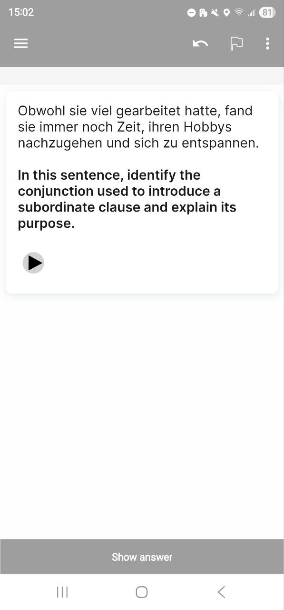
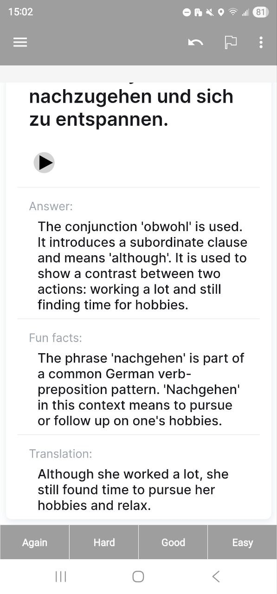

Book Difficulty Analyzer
Personal Project
I made this as a tool as an alternative to reading through a grammar book. It generates flashcards tailored to the difficulty level specified by the user, a translation, audio, and a grammar question and answer, and a fun-fact about that particular sentence structure.
The user sets:
- How many flashcards to generate
- The difficulty level of the question (such as A1, B2, etc. The user can also set a multiple difficulties (ex: A1, A2, B2))
- The language they are learning
- The desired language of the translations
The rest will be handled automatically.
The user can also customize the instructions sent to the agent if they wish. There are language-specific instructions that can be appended for fine-grained control (for example, I included a list of grammar concepts that I would like covered at different difficulty levels.)
This is a crucial question - since we are language learners, most of the time we wont recognize mistakes since we havent learned the language well enough.
To answer this (at least for German) I sent a small survey out to some German native speakers, and asked them to evaluate 1) If the senteces are proper, correct German, and 2) Is the sentence appropriate for the language level.
Their answers were encouragingly positive! They rated all sentences (~20) as appropriate for the specified difficulty level, and only a few sentences had minor errors.
After the user sets their preferences, the program splits the number of desired flashcards evenly, and uses a combination of OpenAI API, DeepL Translations, and ElevenLabs Text-To-Speech (TTS) to generate the following:
- A sentence suitable for the difficulty level
- A grammar question & answer pair, suitable for the difficulty level
- Audio file of the sentence being spoken, which is automatically added to the users Anki Media folder (so cards can access it)
- A ready-to-import Anki deck for each difficulty level specified, making it easy to focus on grammar at each stage of the language learning process.

A flow chart of how the program works


An example of the imported Anki cards (Front, Back) using the template I provided